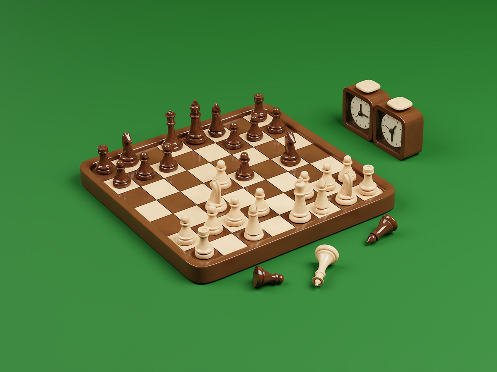

Chess is a board game for two players. It is sometimes called international chess or Western chess to distinguish it from related games such as xiangqi (Chinese chess) and shogi (Japanese chess). Chess is an abstract strategy game that involves no hidden information and no elements of chance. It is played on a chessboard with 64 squares arranged in an 8×8 grid. The players, referred to as "White" and "Black", each control sixteen pieces: one king, one queen, two rooks, two bishops, two knights, and eight pawns. White moves first, followed by Black. The game is won by checkmating the opponent's king, i.e. threatening it with inescapable capture. There are several ways a game can end in a draw. The recorded history of chess goes back at least to the emergence of a similar game, chaturanga, in seventh-century India. The rules of chess as they are known today emerged in Europe at the end of the 15th century, with standardization and universal acceptance by the end of the 19th century. Today, chess is one of the world's most popular games, and is played by millions of people worldwide.
 A huge body of chess theory has developed since the game's inception. Aspects of art are found in chess composition, and chess Todayits turn influenced Western culture and the arts, and has connections with other fields such as mathematics, computer science, and psychology. One of the goals of early computer scientists was to create a chess-playing machine.
1997, Deep Blue became the first computer to beat the reigning World Champion in a matc h when it defeated Garry Kasparov.Today's chess engines are significantly stronger than the best human players and have deeply influenced the development of chess theory; however, chess is not a solved game.
The game is played on a square board of eight rows (called ranks) and eight columns (called files). By convention, the 64 squares alternate in color and are referred to as light and dark squares; The game is played on a square board of eight rows (called ranks) and eight columns (called files). By convention, the 64 squares alternate in color and are referred to as light and dark squares; common colors for chessboards are white and brown, or white and green. common colors for chessboards are white and brown, or white and green.